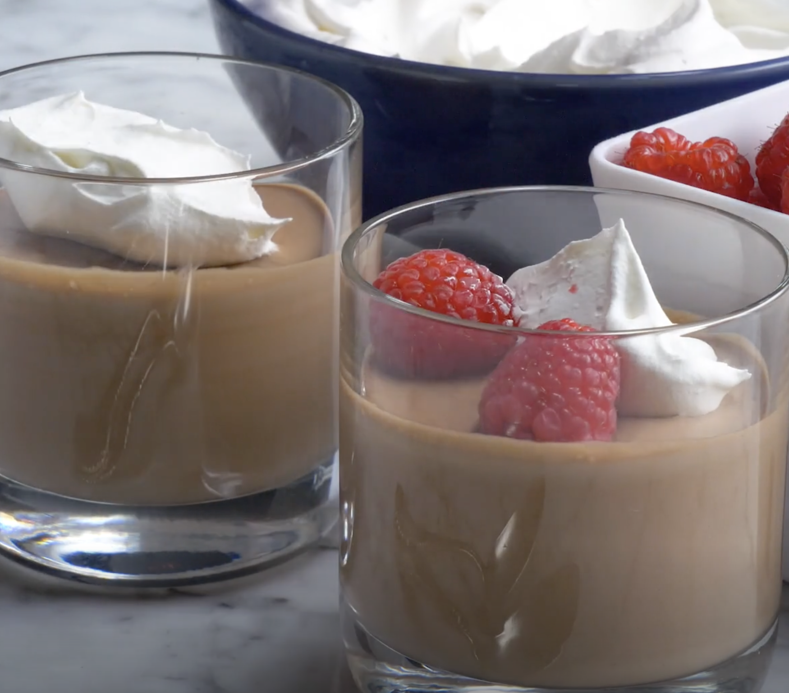
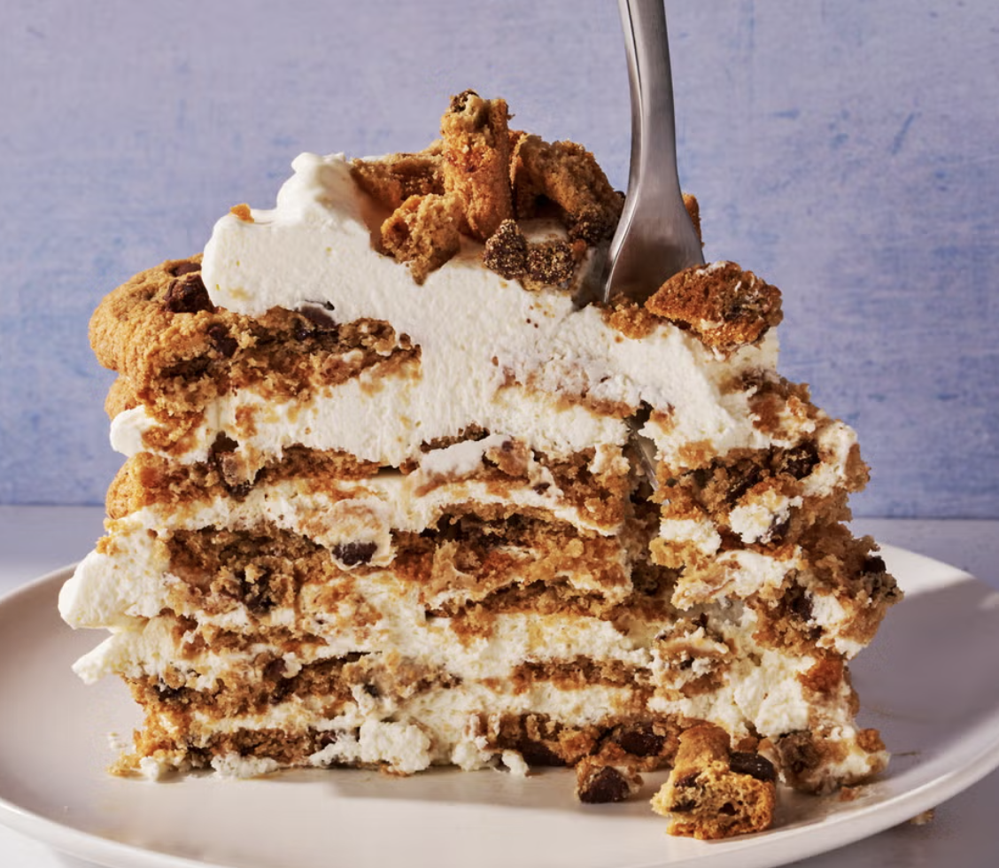
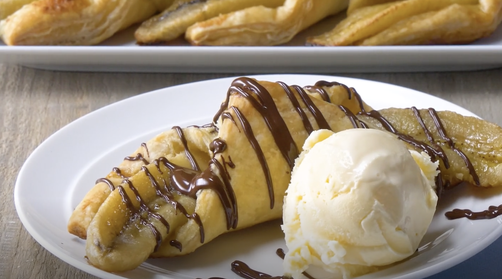
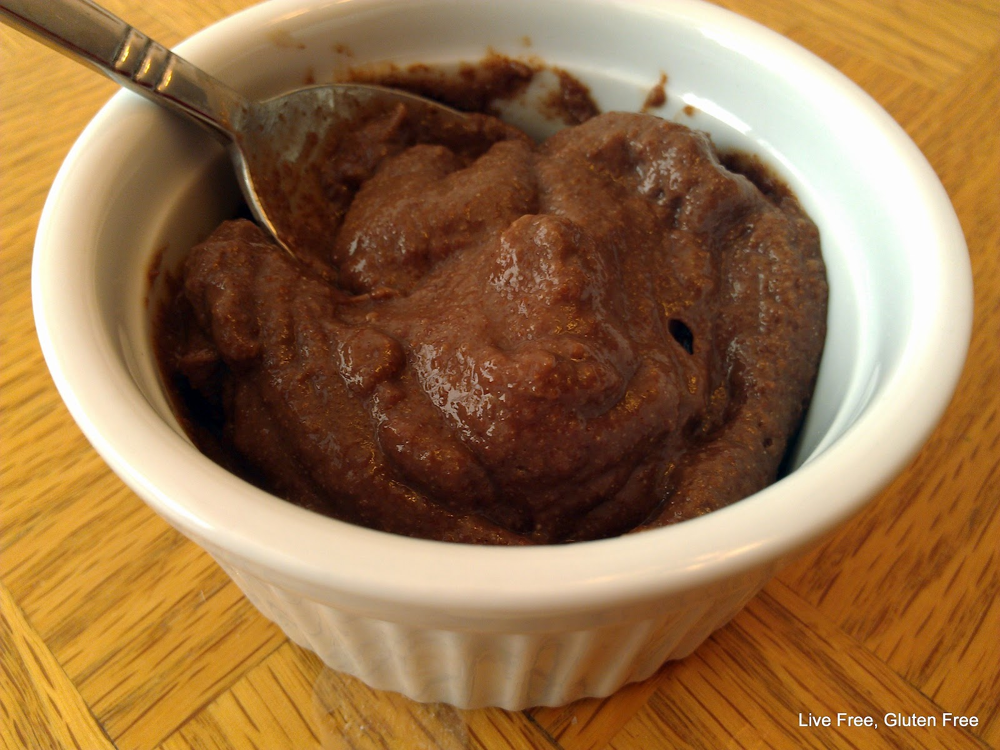
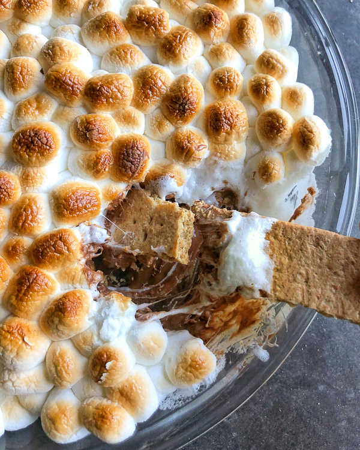
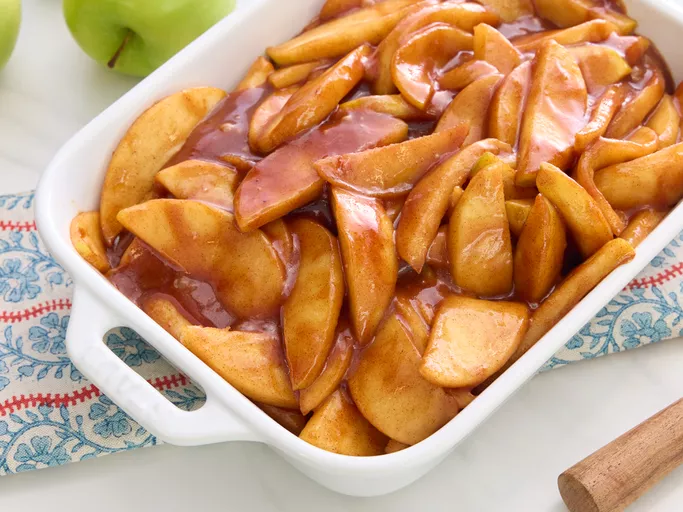
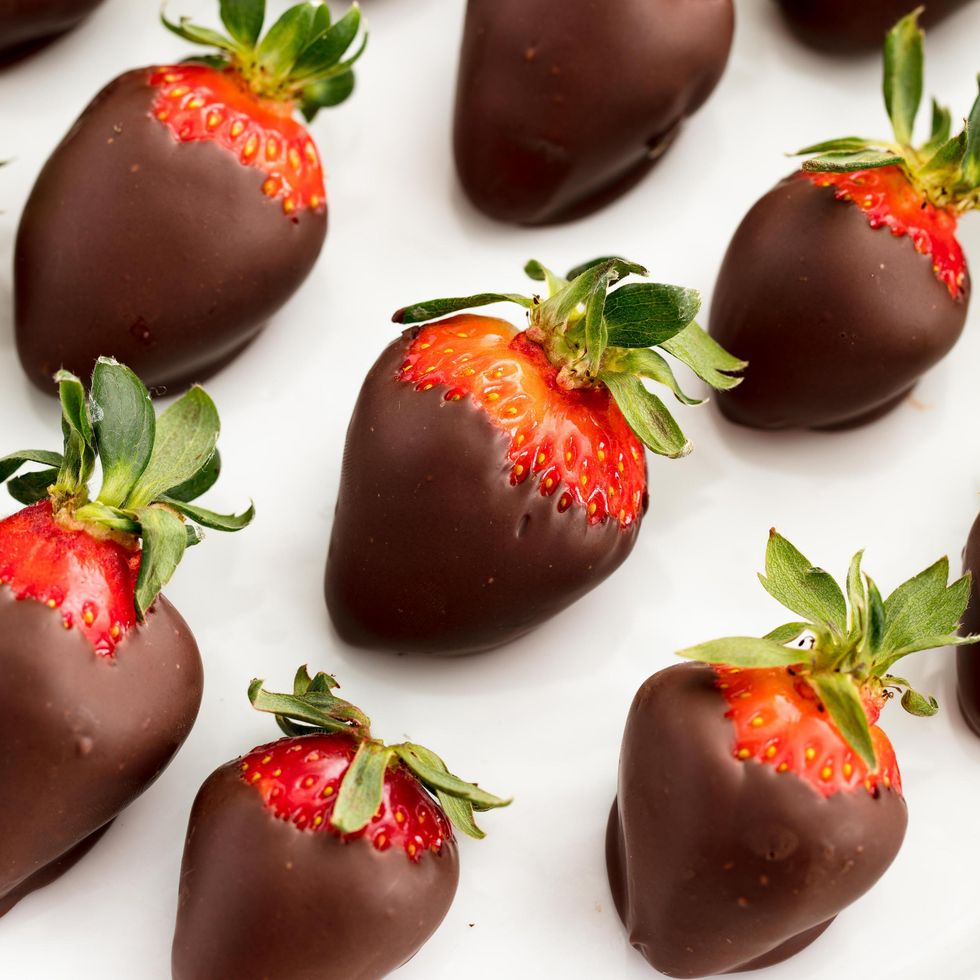

Chocolate Mousse
Ingredients
- Chocolate
- Egg yolk
- Vanilla extract
- Heavy whipping cream
- Sugar
How to Make
- In a small saucepan, melt the chocolate chips with water, stirring until smooth.
- Add a small amount of the chocolate mixture to the egg yolk to gently warm it, preventing curdling when combined with the rest.
- Return the egg and chocolate mixture to the pan, stirring constantly. Cook and stir for two minutes, or until the mixture thickens slightly.
- Remove the pan from the heat and stir in the vanilla. Transfer the mixture to a small bowl, stirring occasionally until it is completely cooled.
- In another small bowl, whip the cream until it starts to thicken. Add the sugar and continue beating until soft peaks form; the cream should be glossy and fluffy, with the peaks gently flopping over when the beaters are lifted.
- Using a large spoon or spatula, carefully fold the whipped cream into the cooled chocolate mixture.
- Cover and refrigerate for at least two hours. If desired, top with whipped cream and raspberries before serving.

Milk 'n' Cookies Icebox Cake
Ingredients
- 2 (13-oz.) boxes store-bought chocolate chip cookies
- 3 c. heavy cream
- 1 (8 oz) block cream cheese, softened
- 2 Tbsp. powdered sugar
How to Make
- In a large resealable bag, crush 15 chocolate chip cookies using a rolling pin. Transfer most of the crushed cookies to a large liquid measuring cup, reserving some for decoration later, and mix in heavy cream. Allow it to sit for 10 minutes.
- Pour the heavy cream through a strainer into a large bowl, discarding the crushed cookies.
- In another large bowl, add cream cheese and use a handheld electric mixer to beat it until fluffy, about 1 minute. Incorporate the sugar and mix until smooth, then add the cookie-infused cream and continue beating until soft peaks form.
- Spread a thin layer of the whipped cream mixture on a cake plate. Arrange 8 cookies in a circle, placing 3 cookies in the center. Add a layer of whipped cream on top, followed by another layer of cookies, ensuring they’re staggered to avoid direct overlap. Repeat this process until you have six layers, finishing with whipped cream on top.
- Sprinkle crushed cookies on top, then loosely cover with plastic wrap and refrigerate until very soft, about 6 hours.

Microwave Chocolate Lava Cake
Ingredients
- ¼ cup flour(30 g)
- 1 teaspoon baking powder
- 2 tablespoons sugar
- 2 tablespoons cocoa powder
- ⅛ teaspoon salt
- 2 tablespoons oil
- 2 tablespoons milk
- 1 chocolate truffle
- 1 scoop ice cream, optional
How to Make
- In a bowl, combine flour, 1 teaspoon of baking powder, 2 tablespoons of sugar, 2 tablespoons of cocoa powder, and ⅛ teaspoon of salt. Mix thoroughly.
- Next, add 2 tablespoons of oil and 2 tablespoons of milk, stirring until it forms a paste. Transfer the mixture to a microwave-safe bowl and place a chocolate truffle in the center.
- Microwave for approximately 70 seconds, then optionally top with ice cream.

Chocolate Banana Bundles
Ingredients
- Butter
- Brown sugar
- Bananas
- Frozen puff pastry
- Semisweet chocolate
- Vanilla ice cream
How to Make
- Preheat the oven to 400°F. In a large cast-iron or heavy skillet, melt the butter over medium heat. Stir in the brown sugar until well combined. Add the bananas, ensuring they are coated in the butter-sugar mixture, then remove from heat and set aside.
- Unroll the puff pastry and cut it into four rectangles. Place a banana half in the center of each rectangle. Fold two opposite corners of the pastry over the banana and pinch securely to seal. Arrange the wrapped bananas on parchment-lined baking sheets.
- Bake the banana pastries until golden brown, about 20 to 25 minutes. Drizzle with melted chocolate and serve warm, with ice cream if desired.

No Egg Chocolate Mug Cake
Ingredients
- 4 tablespoons all-purpose flour
- 4 tablespoons white sugar
- 3 tablespoons milk
- 2 tablespoons unsweetened cocoa powder
- ½ tablespoon olive oil
- 1 pinch baking powder
- 1 tablespoon semisweet chocolate chips
- 1 tablespoon sliced almonds
How to Make
- 1. In a large mug, combine flour, sugar, milk, cocoa powder, olive oil, and baking powder until thoroughly mixed. Fold in the chocolate chips and almonds.
- Microwave the mug until the cake has risen by 50 percent, which should take between 30 seconds and 2 minutes.

Hasty Chocolate Pudding
Ingredients
- ½ cup white sugar
- ⅓ cup unsweetened cocoa powder
- 3 tablespoons cornstarch
- 2 cups milk
- 2 teaspoons vanilla extract
How to Make
- In a microwave-safe bowl, whisk together sugar, cocoa, and cornstarch. Gradually add milk, mixing until there are no dry lumps left.
- Microwave on high for 3 minutes, then stir well. Continue cooking and stirring in 1-minute intervals until the mixture is shiny and thick, which should take an additional 2 to 4 minutes. Stir in vanilla.
- Cover the surface of the pudding with plastic wrap to prevent a skin from forming, then refrigerate to chill. Serve cold.

Peanut Butter Smores Dip
Ingredients
- 1 lb mini peanut butter cup(455 g)
- 1 lb large marshmallow(455 g)
- 15 graham crackers
How to Make
- Preheat the oven to 350°F (180°C).
- Arrange the peanut butter cups in a single layer at the bottom of a large oven-safe skillet, then top with a layer of marshmallows.
- Bake for 20 minutes, or until the marshmallows are golden brown.
- Serve alongside graham crackers for dipping.

Southern Fried Apples
Ingredients
- ½ cup butter
- ½ cup white sugar
- 2 tablespoons ground cinnamon, or to taste
- 4 Granny Smith apples - peeled, cored, and sliced
How to Make
- Melt butter in a large skillet over medium heat. Stir in sugar and cinnamon until the sugar is dissolved.
- Add the apples and cook until they are softened, about 5 to 8 minutes.

Chocolate-covered Strawberries
Ingredients
- 1 pt. strawberries
- 2 c. semisweet chocolate chips
- 2 Tbsp. coconut oil
How to Make
- Preheat a large baking sheet with parchment paper. Rinse the strawberries and gently dry them with paper towels.
- In a small microwave-safe bowl, mix chocolate chips and coconut oil, then microwave in 30-second intervals, stirring in between, until fully melted.
- Dip the strawberries into the melted chocolate and arrange them on the prepared baking sheet.
- Refrigerate until the chocolate hardens, about 30 minutes.